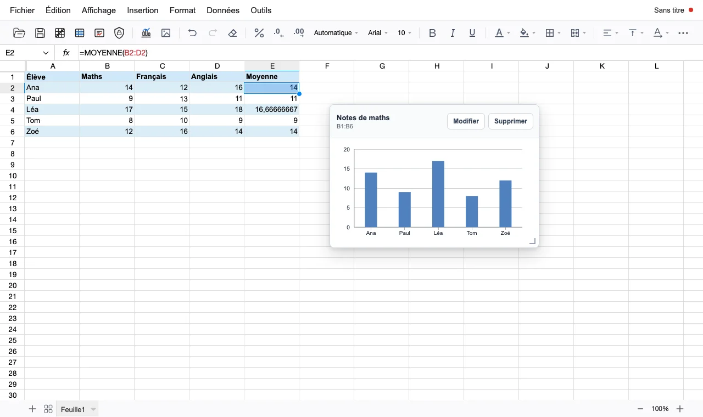

Manuel d’utilisation du logiciel DocCells
DocCells est un tableur multilingue qui s’utilise dans le navigateur, sans installation ni compte. Il ouvre et enregistre les classeurs Excel (.xlsx).

L’essentiel en six gestes
| Pour | Faire |
|---|---|
| Saisir | cliquer une cellule, taper, Entrée (saisir des données) |
| Calculer | taper = puis la formule : =MOYENNE(B2:B6) (les formules) |
| Recopier une formule | tirer la poignée bleue de la sélection, ou Ctrl D (recopier) |
| Présenter | menu Format, ou les boutons (mise en forme) |
| Tracer | sélectionner les données, (graphiques) |
| Enregistrer | Ctrl S : un fichier Excel (ouvrir et enregistrer) |
Sommaire
- Ouvrir et enregistrer : fichiers, récents, récupération, Google Sheets, langue.
- L’interface : menus, boutons, barre de formule, onglets, zoom.
- Saisir des données, sélectionner, copier, recopier.
- Les formules, listes et complexes, plages nommées, les feuilles.
- Formats de nombre, mise en forme, formatage conditionnel, lignes et colonnes.
- Trier, filtrer, rechercher, cases, listes et calendrier, graphiques et sparklines, images et liens, imprimer.
- Protéger un classeur pour des élèves, le partager et l’intégrer, l’utiliser avec DocGeo.
- Référence : les 314 fonctions, raccourcis, compatibilité Excel, questions fréquentes.
Conventions
- Les boutons sont désignés par leur icône ( gras).
- Ctrl s’entend ⌘ sur Mac.
- Les formules sont écrites en français : noms de fonctions français, virgule décimale, point-virgule entre les arguments. DocCells les affiche dans la langue de l’interface.
- Recherche dans le manuel : / ou Ctrl K. Les mots tapés peuvent être dans n’importe quel ordre, sans accents ; un nom de fonction, français ou anglais, mène à sa ligne.